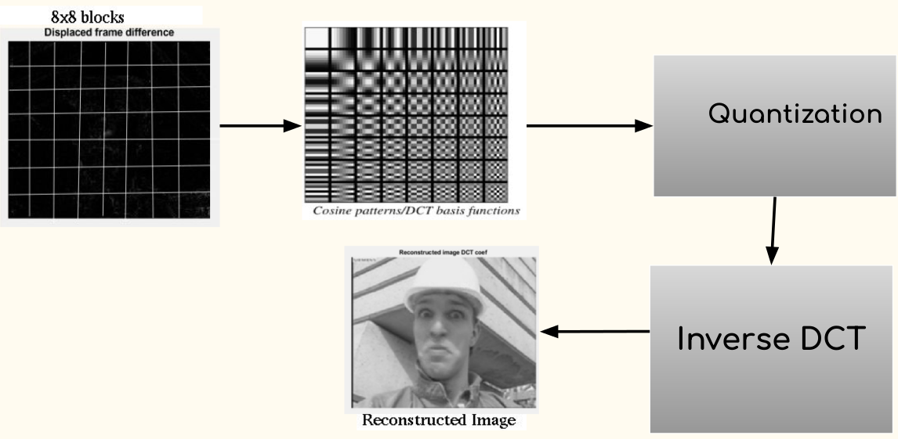

Involved the identification of an efficient method to sparcify the signal using GFT and DCT.

Graph-based compression methods
use a graph representation of the
signal through its GFT. The GFT interprets a signal as being
defined on a graph, and calculates
the eigenvector decomposition of
the corresponding graph Laplacian. A graph can be computed for each
image blocks, making the GFT a more flexible framework for transform design. An image can be represented by a
graph, where the nodes are the image pixels and the edge weights capture the similarity between adjacent pixels.
A discrete cosine transform (DCT) expresses a finite sequence of data points in terms of a sum of cosine
functions oscillating at different frequencies. Partition the image into blocks of 8x8 pixels and apply the DCT transform
on each block, then by using JPEG standard quantization table we obtain the quantized coefficients.
Open a PDF file Here.